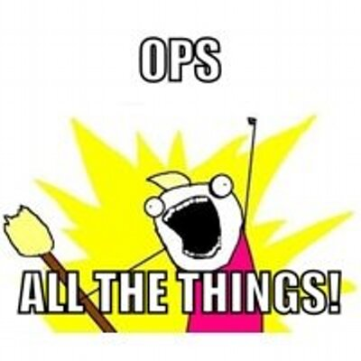

Introduction to Chef
Of all the bootcamp subjects to cover I think this one is the most impossible to present properly in one hour. We will be able to cover the "What Chef is" but not as much about "How Chef does it". That said, with the info here you will create a simple cookbook to configure a server.
Chef is a product from Chef.
- Chef will install and configure software for your server (or VM of a server) - or even your laptop if you wanted.
- Chef is a DSL based on Ruby. Knowing Ruby is helpful but not required.
- Almost everything from Chef is open source. Especially the community cookbooks Chef maintains.
- You write recipes which are stored in cookbooks. A knife does most of the work. LOTS of cooking related names.
- It is generally assumed you are using Git with Chef. Not a requirement, but some tools in the Chef ecosystem will actually try and execute Git commands.
- Chef and its ecosystem of tools are advancing at a pace I've never seen in a tool. It is *hard* to keep to up date (and it's my part of my job).
- Wanna learn how to do something in a Chef cookbook. Cookbooks in the Chef Supermarket have examples of just about everything. Don't reinvent the wheel.
All the best practices of software development are available.
The Ruby community are excellent at the practice of TDD (Test Driven Development). This has, thankfully, carried over to the Chef community. The tools exist, they increase the learning curve, but prevent bad check-ins when used properly.
- Dependency management - Berkshelf
- Code linting - Foodcritic and Rubocop
- Unit Testing - ChefSpec
- Integration Testing - Test Kitchen
- All these tools are so useful, Chef bundled them together in to the Chef DK.
- Automation of linting, unit testing and interation testing after a code check-in can be done in in Countinuous Integration tools like Jenkins, just like building other software projects
- Successful completion of the above steps would indicate a working cookbook change and your CI server can publish the change to the Chef server for managed machines to pull down the update and apply it.
Getting started.
LearnChef has a well crafted tutorial based on your prefered client OS. As well as numerous other webinars and tutorials. Follow the steps as described - you'll accomplish more in an hour than you're expecting!
Chef Server/Client
The Chef Client's interactions with the Chef Server are a REST based API actually.
Developing Chef cookbooks actually reminds me of old school web application development. You edit the cookbook, upload to the server and then run a Vagrant VM to pull down the change an apply, Chef calls this converging the cookbook on the client node to validate it works. Edit, upload, provision/converge, verify results.
Do not reinvent the wheel
Now that we've covered all that - here's the secret to Chef. It's all been done before!!! In the same way that Java has Maven, Ruby has games or Node has npm for getting libraries people have already created - Chef has community cookbooks. They're open source - use them *and* learn from them.
Need Java? Use the community cookbook!
Need Tomcat? Use the community cookbook!
Need MongoDB? Use the community cookbook!
For a generic base install of MongoDB from the community cookbook? It's two lines.
# in metadata.rb file
depends 'mongodb'
# in default.rb file
include_recipe 'mongodb'
Do not reinvent the wheel (unless you have to)
The community cookbooks are robust and often, but not always, support a wide range of configuration options (like host name, app install directory).
BUT - sometimes (read: often) the community cookbook just isn't right. Go ahead a roll your own. Spin up a base Vagrant VM. Run some commands to install your software just the way you need. Then copy those commands in to a cookbook. Copy any config files to your cookbook too. Now you can reproduce your app install as many times as needed. OR - contribute a change back to the community cookbook via a GitHub Pull Request. We know how to do that.
Create our first cookbook
Generating your first cookbook starts with the chef generate cookbook automation-tools command.
This will give you a directory structure with all files necessary to stubbed out. Let's just dig in to the recipes/default.rb file and use it to install Apache2.
# in recipes/default.rb
package 'apache2' do
action :install
end
Test Kitchen
Very good. Now to test it. You'll need the Chef Server, then upload the cookbook to the server, bootstrap a VM with Vagrant, register the VM with the Chef Server, and then finally converge the node to see if your cookbook works. Sounds like a pain in the butt and it was. With some Vagrant plugins the process was bearable, but still clunky.
But Flether Nichol decided we should have a better experience and instead created Test Kitchen. Similar to the joy that Mitchell Hashimoto delivered by putting VM settings in a Vagrantfile, Fletcher took Configuration Management testing to the next step and now we create .kitchen.yml files.
We're just going to run kitchen converge. It'll fake out a Chef server with Chef Zero (or use a real Chef server if that's your thing), spin up your desired machine with your desired driver (Vagrant, Docker, AWS, OpenStack, etc), do a Chef client run of your cookbook and then test the changes (kitchen test) were applied or allow you to log in to the VM and check things out manually. All of which is driven by the data in your .kitchen.yml file.
Chefs to follow on Twitter
Podcasts to listen to
Food Fight Show
The Ship Show
Arrested DevOps
 Ops All The Things!
Workout
We are going to complete the following actions
- Review the example cookbook which you checked out during the Git session.
- Edit the
recipes/default.rbfile to install Apache 2 using theapache2package. - Converge the node with Test Kitchen
kitchen converge - Browse to the VM in your browser. http://localhost:8080.
- Connect to the VM via SSH (
kitchen ???) and then stop the Apache server from runningsudo service apache2 stopand reload the webpage. - Feel free to move on to more Chef topics with Chef in Practice